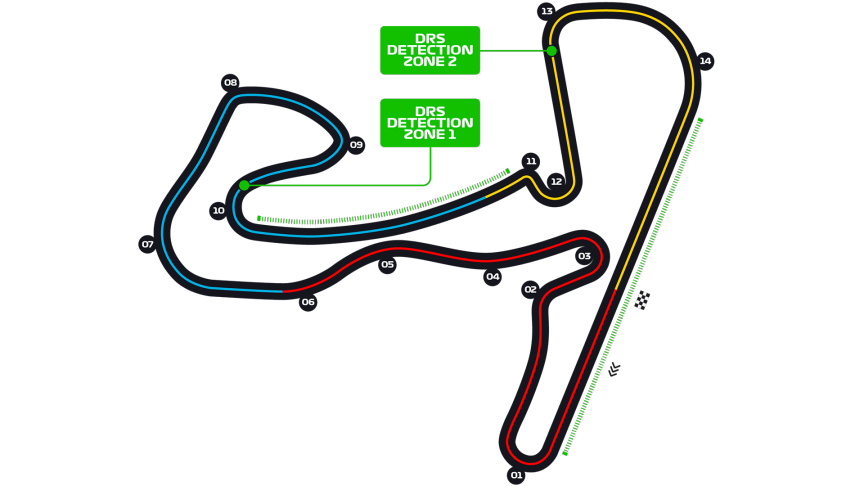

Grand Prix des Pays-Bas
Informations
Nom du circuit
Circuit Zandvoort
Lieu
Zandvoort (Pays-Bas)
Nombre de tours
72
Longueur du circuit
4.259 km
Distance de course
306.587 km
Dernier vainqueur
Max Verstappen
Classement nombres de victoires sur ce circuit
4 victoires - James Clark
3 victoires - Jackie Stewart
3 victoires - Niki Lauda
Le saviez-vous ?
Le circuit a été le théâtre de la dernière victoire du célèbre pilote de Formule 1, Niki Lauda.
Le circuit de Zandvoort a accueilli de nombreux GP lors des années 1952 à 1985, mais à du attendre l'édition 2021 pour revenir au calendrier de la discipline.
La particularité de ce GP ? Étant dans le pays natal de Max Verstappen, ce GP représente un véritable événement national. En effet, le pilote néerlandais est un véritable héros dans son pays. En témoigne son "Orange Army" très présente lors de nombreux GP.